It's easy to treat the Easter basket as an afterthought next to the bigger gift, but the small surprises are usually what spark the biggest reaction. Kids dump the basket out and inspect every single item; adults laugh at the ones that genuinely surprise them. That layered excitement is what makes the morning feel memorable, not just the size of what's inside.
None of that requires a trip through the candy aisle on autopilot. A few well-chosen, age-appropriate items beat a pile of generic filler every time, and most of the best ones aren't candy at all.

What Actually Makes a Good Stuffer
Three questions settle most of it: does it spark curiosity or joy, will it actually get used, and is it something the person wouldn't expect? A basket built entirely around "safe" choices ends up forgettable, while one with a single genuine surprise is usually the one people remember by name the next year.
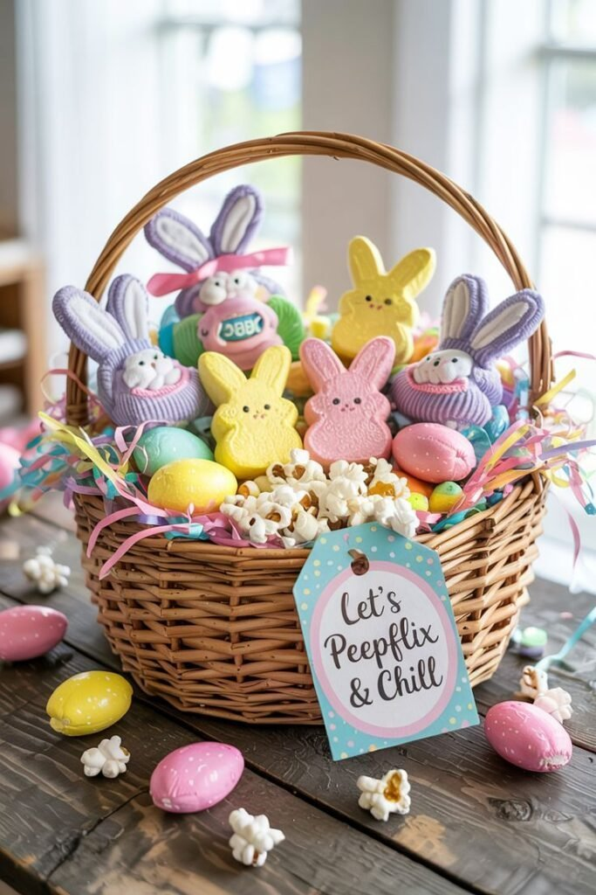
15 Easter Basket Stuffer Ideas
1. Gift Cards With a Creative Twist
Gift cards can feel like the obvious, low-effort choice, but presentation changes that completely.
Rolling it inside a small treat, attaching it to a handwritten note, or hiding it inside a plastic egg all turn a flat card into something that feels considered.
Wrapped with a little intention, a gift card stops feeling generic and starts feeling like it was actually chosen for that person.
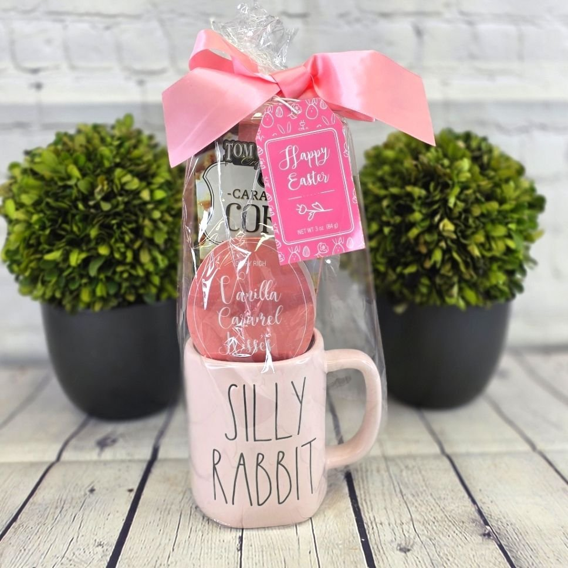
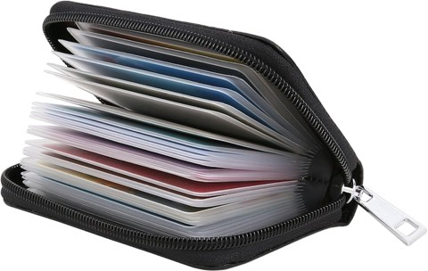
Easyoulife Genuine Leather Zipper Credit Card Holder Wallet, 26 Card Slots
Shop on Amazon2. Small Games That Spark Connection
A good game elevates a basket from basic to genuinely memorable, and it does something candy never manages: it pulls people together.
A compact card game, a small trivia set, or a two-player puzzle all create a shared moment once the egg hunt itself is over.
A simple card game tucked into one adult's basket has a way of turning into a two-hour family competition nobody saw coming.
3. DIY Stuffers With Heart
For a basket that feels genuinely meaningful rather than just well-shopped, something handmade goes a long way.
A small handmade craft, a photo, or a personal memento all cost little but tend to mean the most.
Even a simple handwritten note tucked into the basket, explaining why someone matters, costs nothing and often becomes the one item that actually gets kept.
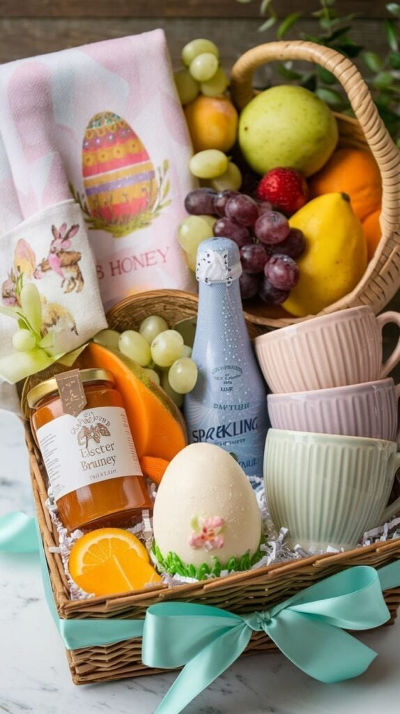
4. Sweet Treat Alternatives
For anyone trying to dodge a full sugar crash, there are plenty of treats that still feel indulgent without being pure candy.
Gourmet popcorn, flavored nut mixes, or dried fruit all deliver the same snackable satisfaction minus the sugar spike.
Swap in a few of these and they tend to disappear just as fast as the candy would have, sometimes faster.
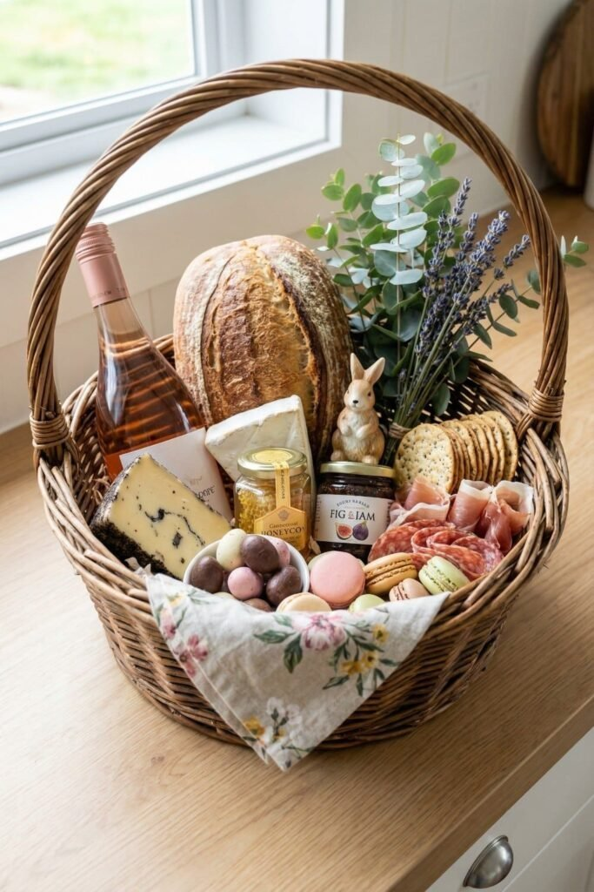
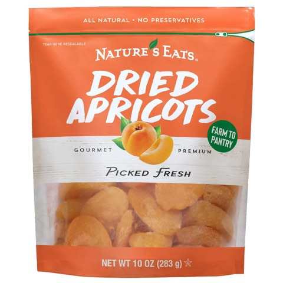
Nature's Eat Sun Dried Turkish Apricots, Organic Dried Fruit Snack, 10 oz
Shop on Amazon5. Tech Accessories That Actually Get Used
Small tech accessories punch above their weight here, no expensive gadgets required to make a genuine impression.
A compact charging cable, a pair of earbud covers, or a phone grip all solve a small daily annoyance most people already have.
Teens appreciate them, adults appreciate them even more, and nobody has ever complained about receiving an extra charging cable.
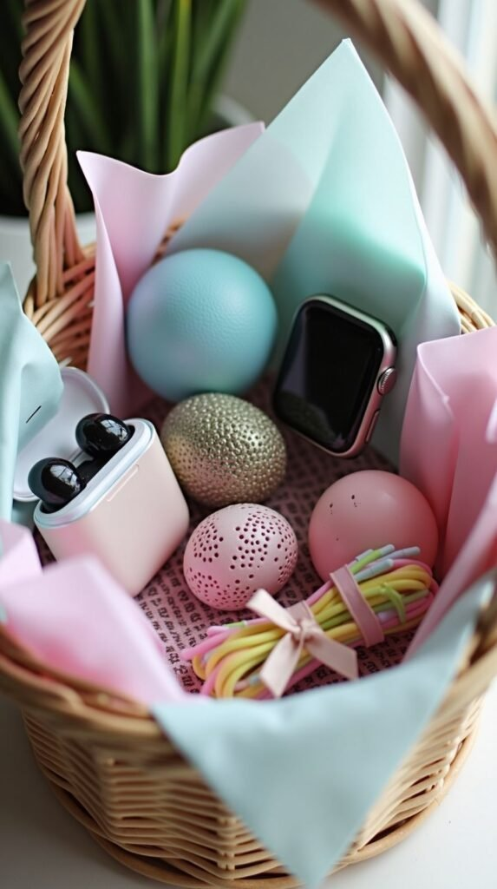
6. Hobby-Based Stuffers That Feel Personal
This is where a basket moves from generic to genuinely thoughtful, built around something the person already loves.
A small tool for a hobby they already have, a themed accessory, or a related mini kit all show that real attention went into the choice.
When a stuffer is tailored to someone's actual interests instead of a generic age bracket, it reads immediately as more considered.
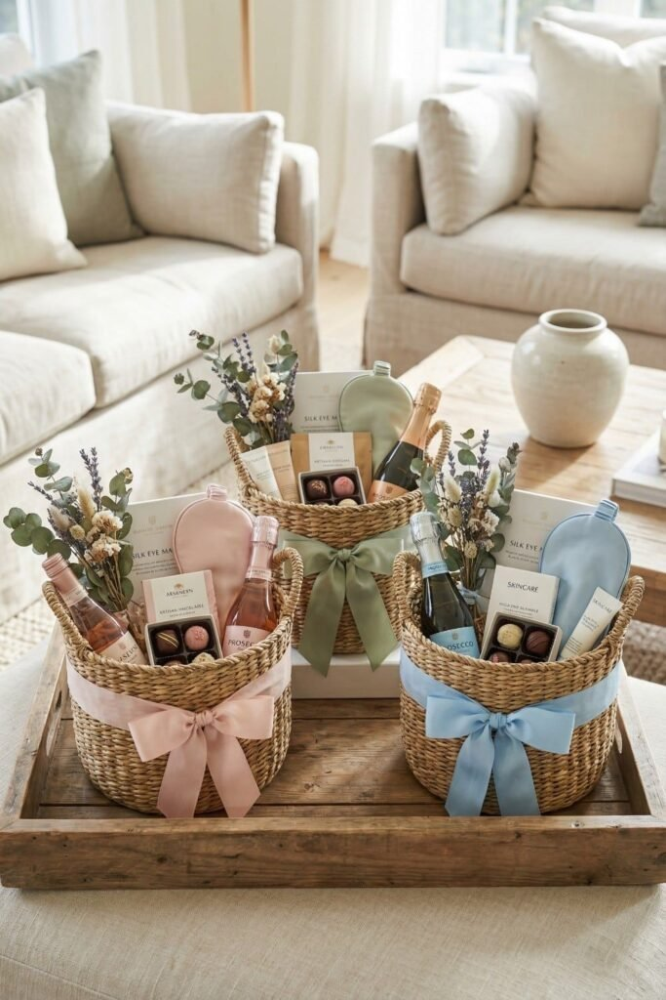
7. Outdoor Fun for Spring Energy
Easter marks the start of warmer weather, so it makes sense to lean into that instead of staying indoors.
Bubbles, sidewalk chalk, or a small kite all encourage movement over screen time, and work surprisingly well across every age group, yes, including the adults.
A bottle of bubbles tossed into an adult's basket as a joke has a tendency to end with everyone outside, laughing like kids again.
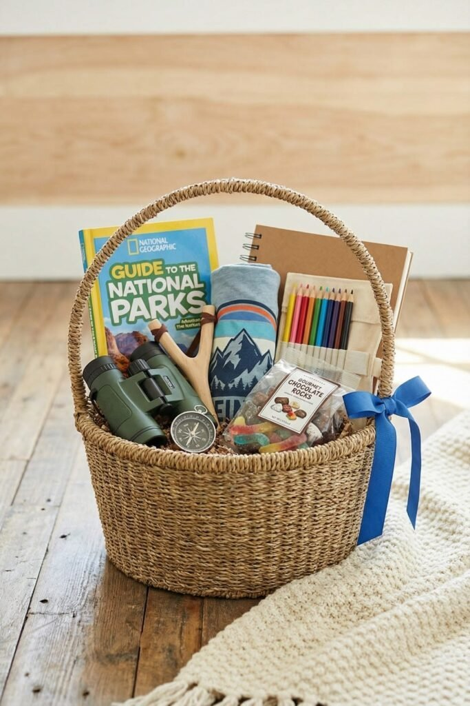
8. Mini Books or Inspirational Reads
Books are close to a sure thing, and they don't need to be anything large to make an impression.
A pocket-sized novel, a small journal, or a quote book all tuck easily into a basket without crowding it.
Slipping a small book into a basket gives someone a tiny escape, a quieter gift than most of the other items on this list, but often the one that gets remembered.
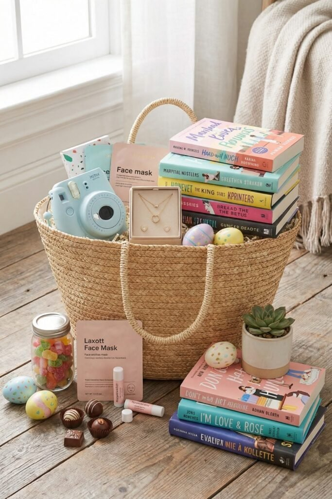
9. Spring-Themed Accessories
Leaning into the season is an easy way to make a basket feel timely rather than generic.
A floral hair clip, a pastel scarf, or a small spring-themed accessory all signal the shift into warmer days without much effort.
These little seasonal touches make a basket feel intentional in a way that's hard to fake with anything else.
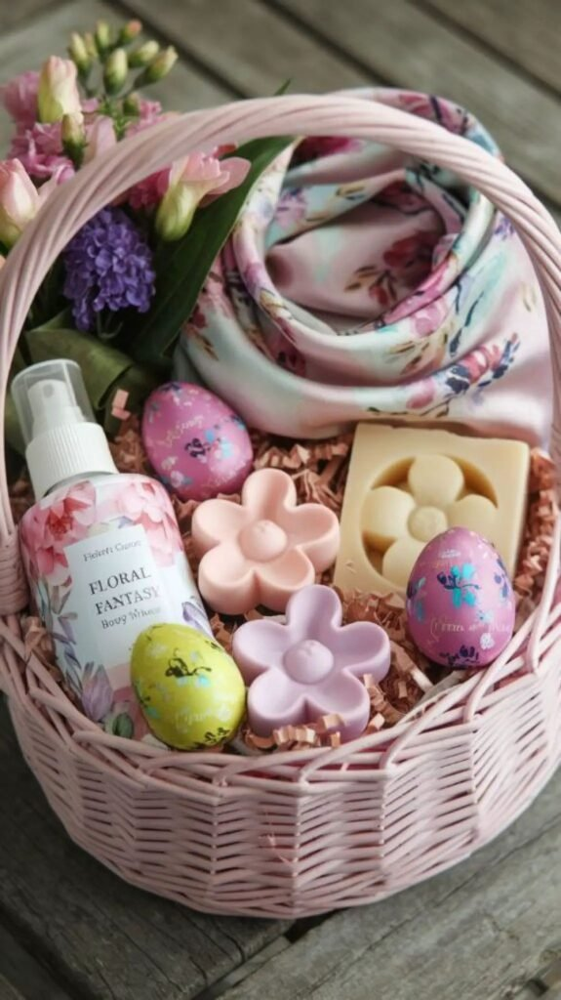
10. Personalized Keychains or Charms
A personal touch tends to stand out more than almost anything else in a basket, and a custom keychain is one of the easiest ways to add one.
An initial, a small charm, or something tied to an inside joke all feel special without costing much at all.
These are the kind of small items that end up staying in daily use long after the rest of the basket is forgotten.
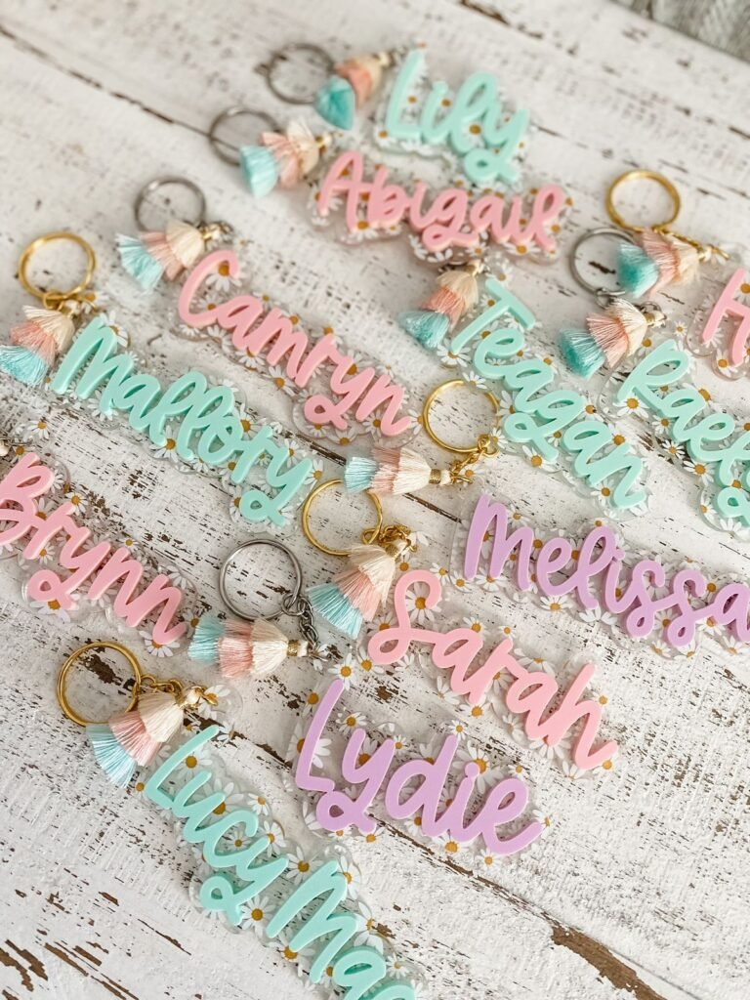
11. Bath Bombs and Self-Care Minis
Self-care doesn't have to be reserved for adult gift sets, kids enjoy a good bath bomb just as much.
A scented bath bomb, a small lotion, or a bit of fizzy bath fun all fit easily into a basket without taking up much room.
It's a small gesture, but it signals a kind of thoughtfulness that a handful of candy rarely manages on its own.
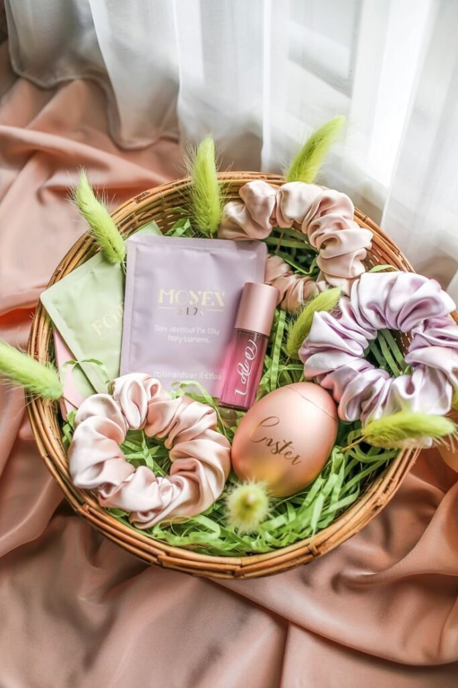
12. Puzzle Games and Brain Teasers
For a stuffer that actually challenges the brain instead of just filling space, a small puzzle or brain teaser does real work.
Mini wooden puzzles, pocket-sized brain teasers, and compact trivia decks all hold attention across a wide range of ages.
The right one can keep someone genuinely absorbed for hours, no screen required, which is a rare thing for a basket stuffer to pull off.
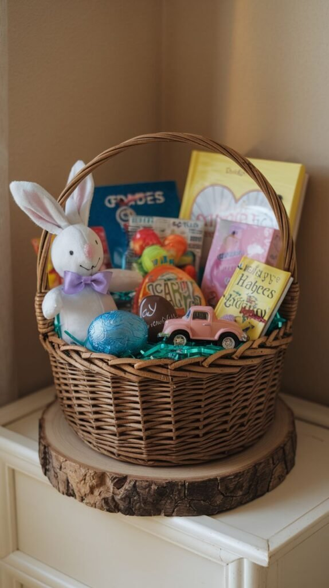
13. Fun Socks With Personality
Socks are a genuinely underrated basket stuffer. A bold pattern turns something purely practical into something people actually get excited about.
They get a laugh the moment they're pulled out of the basket, and then they get worn for the rest of the year.
They work for every single age group on this list, which makes them one of the easiest items to fall back on.
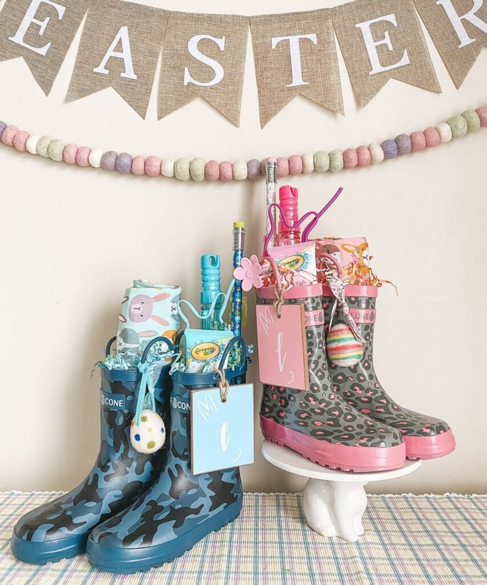
14. Gourmet Candy With a Twist
Skipping candy completely isn't the goal here, it's choosing something a little more considered than the usual bag of jelly beans.
Artisan chocolate, flavored marshmallows, or specialty jelly beans all read as more intentional than the generic version sitting in the checkout aisle.
Quality beats quantity almost every time. Swap in one genuinely good treat and the whole basket feels more thought-through.
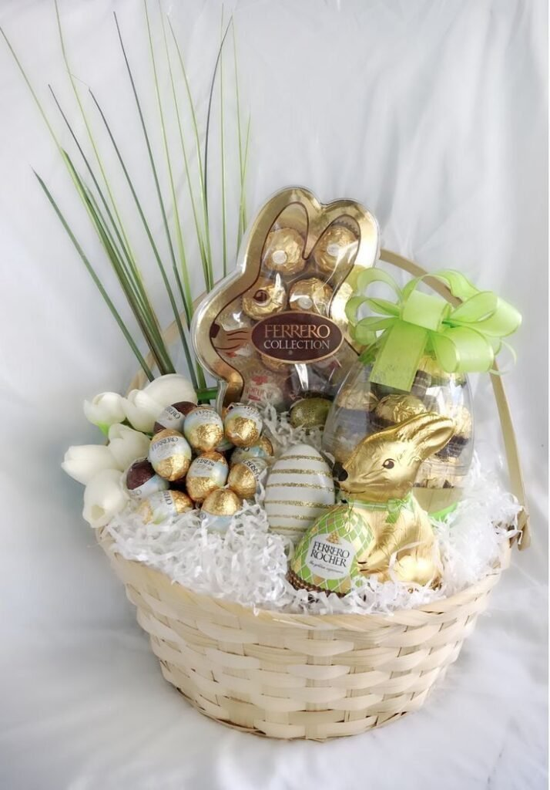
15. Mini Art Supplies for Screen-Free Creativity
Compact creativity is hard to get wrong, and mini art kits work across almost any age in the house.
Kids genuinely love them, teens quietly use them for journaling, and more than a few adults enjoy them more than they'd ever admit.
Small sketchbooks, mini watercolor sets, and a fresh pack of colored pencils all fit easily into a basket and encourage the kind of screen-free, imaginative fun that's harder to find than it should be.
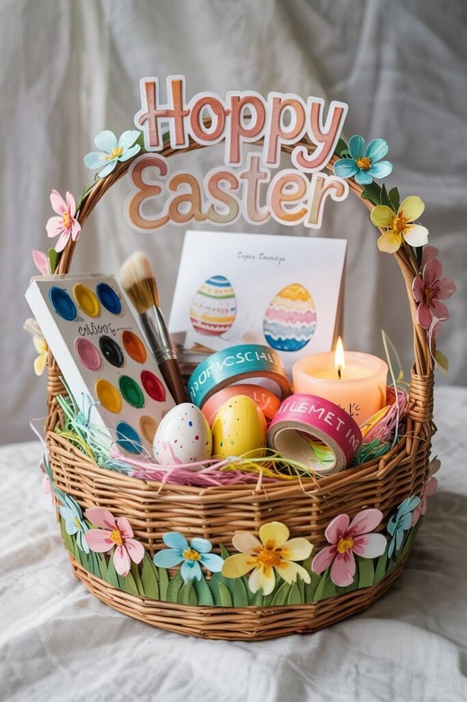
Adjusting for Age
Toddlers do best with safety and sensory fun, bright colors, soft textures, nothing with small, swallowable parts. Kids want variety and layers of discovery, so mixing a few categories from this list works better than repeating one. Teens respond to being treated like teens, not handed something that reads as a kindergarten craft project, so tech accessories, hobby-based picks, and gift cards tend to land best. Adults rarely admit they care, and then quietly enjoy every thoughtful detail anyway.
Final Thoughts
A basket people actually love doesn't require perfection, just a little thought. Pick something that sparks joy, add one practical item, include a genuine surprise, and personalize wherever it's easy to.
Focus on connection over quantity and the basket stops being a pile of stuff and starts being something people actually remember unpacking.